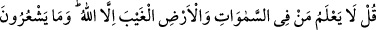
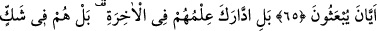
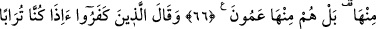
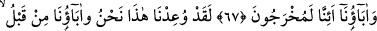
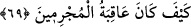
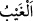

ALLAH’TAN BAŞKA KİMSE
GAYBI BİLMEZ
65. De ki: Göklerde ve yerde, Allah’tan başka kimse gaybı bilmez. Ve onlar ne
zaman diriltileceklerini de bilmezler.
66. Hayır; onların ahiret hakkındaki bilgileri yetersiz kalmıştır. Dahası, bu
hususta şüphe içindedirler. Bunun da ötesinde, onlar ahiretten yana kördürler.
67. İnkârcılar dediler ki: Sâhi, biz ve atalarımız, toprak olduktan sonra,
gerçekten (diriltilip) çıkarılacak mıyız?
68. Andolsun ki, bu tehdit bize yapıldığı gibi, daha önce atalarımıza da yapılmıştır.
Bu, öncekilerin masallarından başka bir şey değildir.
69. De ki: Yeryüzünde gezin de, günahkârların âkıbeti nice oldu, görün!
“De ki: “Göklerde” olan meleklerden “ve yerde” olan insanlardan ve cinlerden
“Allah’tan başka kimse gaybı bilmez.” Fakat gaybı sadece Allah bilir.
“
” kullara gizli kalan kıyamet saati ve benzerleridir ki aşağıda açıklanacaktır.
“Ve onlar” yâni insanlar “ne zaman” kabirlerinden “diriltileceklerini de bilmezler.”
Farkında değildirler.
et-Te’vîlâtü’n-Necmiyye’de der ki: “Allah Teâlâ gaybın mertebeleri olduğuna işâret
etmektedir:
1- Yeryüzü ehline yeryüzünde ve gökte gayb olup da insanın bilgisini elde etme
imkânı olduğu gayb. Bu da iki türlüdür:
Birincisi, görünen yeryüzünde ve semâda bir şahsın sana görünmemesi veya herhangi
bir işin/hususun senden gizli kalması gibi sana gâib/senden gizli olan şeylerdir. Senin o
şahsı bulman ve o gizli işe muttali olman mümkündür. Semâda da ilm-i nücûm ve
astronomi gibi hususlar her ne kadar sana göre gâib/gizli ise de öğrenerek onlara
ulaşabilirsin.
İkincisi, mânâ arzında/âleminde sana gizli olan şeyler. Burası nefis arzı/âlemidir.
Burada keyfiyeti ve kemmiyeti sana gâib olan nefsin vasıfları ve ahlâkı gizlidir. Onlara
mücâhede, riyâzat, zikir ve fikir yoluyla vâkıf olman mümkündür. Mânâ semâsı, kalb